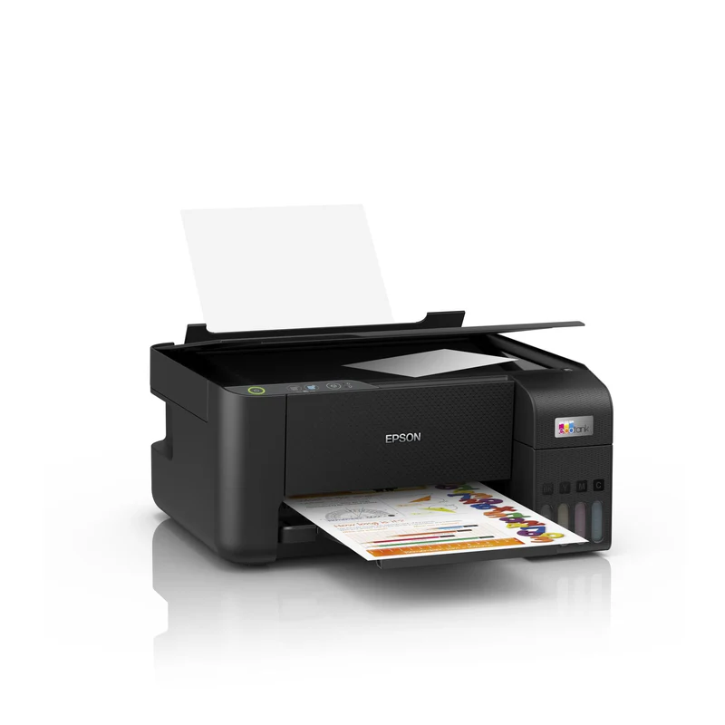
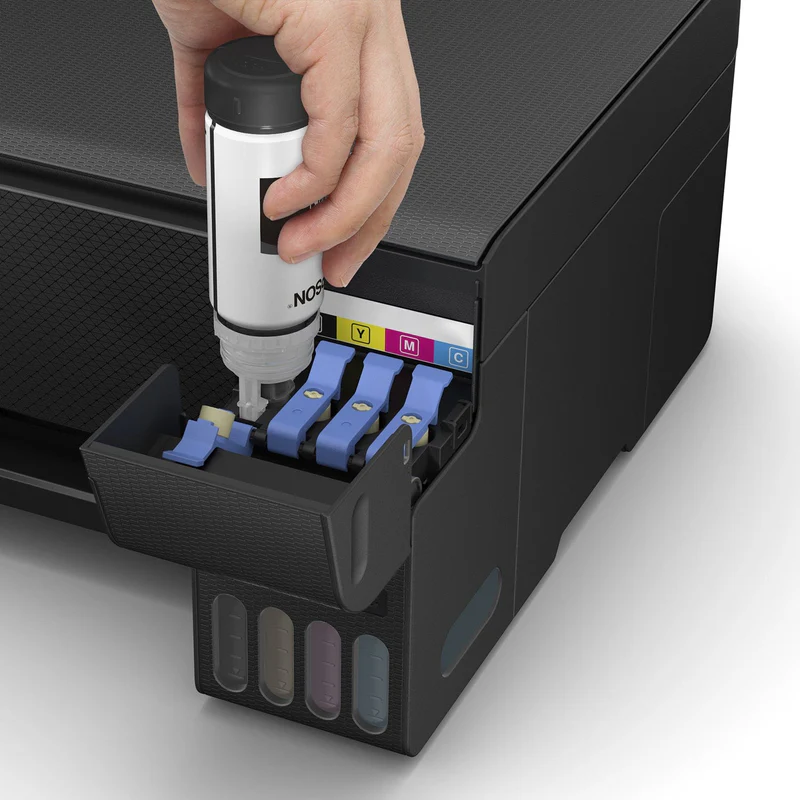
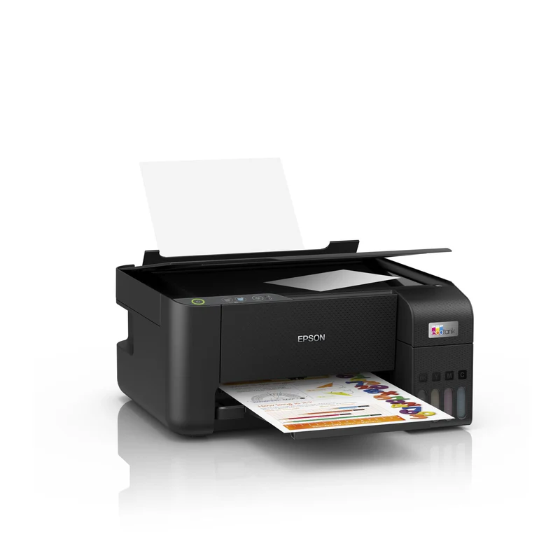
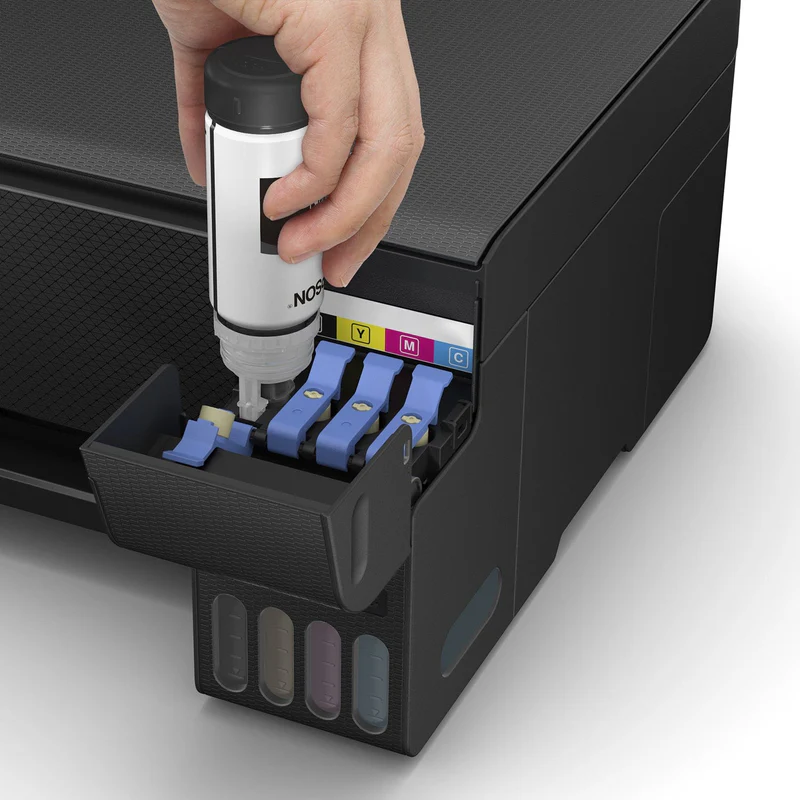

Epson EcoTank L3210 A4 Multifunction Colour Inkjet Printer
With no cartridges to replace, this is the perfect multifunction (print-scan-copy) printer for anyone looking for high-quality prints at an incredibly low cost per page. Featuring a 100-sheet rear paper tray, borderless photo printing (up to 10x15cm) and print speeds of up to 10 pages per minute, you can speed through a variety of tasks with ease.
Say goodbye to expensive cartridges
EcoTank provides hassle-free low-cost home printing - the ultra-high capacity ink tanks allow mess-free refills and the key-lock bottles are designed so only the correct colour can be inserted.
Keep on saving
This economical printer saves you up to 90% on printing costs and comes with up to 3 years' worth of ink included in the box. The included set of ink bottles delivers up to 8,100 pages in black and 6,500 in colour.
Packed with features
Featuring print-scan-copy functionality, borderless photo printing (up to 10x15cm), you can speed through a variety of tasks with ease.
Heat-Free Technology
With Epson Micro Piezo Heat-Free Technology you can enjoy fast and high-quality printing. The reliable and long lasting printhead also comes pre-installed so setting up your printer is hassle-free.
Scan:Single-sided scan speed (A4 black): 200 DPI; , 11 sec. with flatbed scan
Single-sided scan speed (A4 colour): 200 DPI; , 32 sec. with flatbed scan
Output formats: BMP, JPEG, PICT, TIFF, multi-TIFF, PDF, PNG
Scanner type: Contact image sensor (CIS)
Optical Resolution: 600 DPI x 1.200 DPI (Horizontal x Vertical)
Number of paper trays: 1 Paper Formats: C6 (Envelope), B5, A6 (10.5x14.8 cm), A5 (14.8x21.0 cm), A4 (21.0x29.7 cm), Legal, User defined, 13 x 18 cm, 10 x 15 cm, Letter, No. 10 (Envelope), DL (Envelope), 16:9
Duplex: Manual
Output Tray Capacity: 30 Sheets
Paper Tray Capacity: 100 Sheets Standard, 100 Sheets Maximum, 20 Photo Sheets
Compatible Paper Weight: 64 g/m² - 300 g/m²
Media Handling: Borderless Print (up to 10 x 15cm)
 


